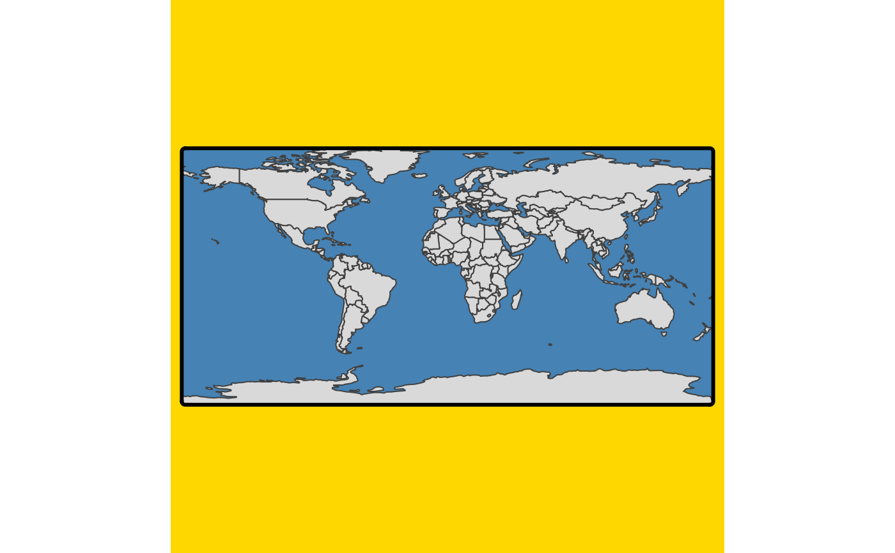
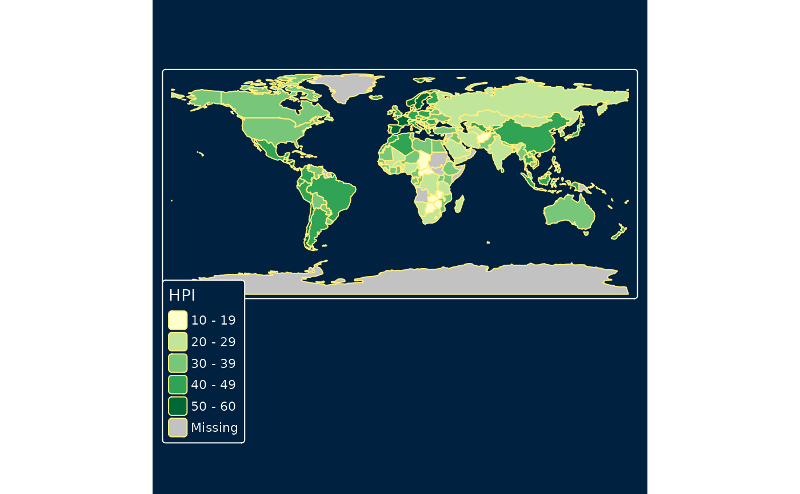
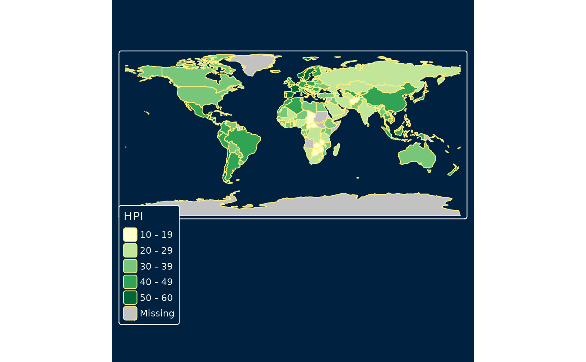

Specify the layout of the maps. tm_layout() is identical as tm_options() but only contain the tmap options that are directly related to the layout. tm_style() sets the style for the map. A style is a specified set of options (that can be changed afterwards with tm_layout()). These functions are used within a plot a plot call (stacked with the + operator). Their counterparts tmap_options() and tmap_style() can be used to set the (layout) options globally.
Usage
tm_style(style, ...)
tm_layout(
scale,
asp,
legend.only,
bg,
bg.color,
outer.bg,
outer.bg.color,
frame,
frame.color,
frame.alpha,
frame.lwd,
frame.r,
frame.double_line,
outer.margins,
inner.margins,
inner.margins.extra,
meta.margins,
meta.auto_margins,
between_margin,
text.fontfamily,
text.fontface,
r,
attr.color,
panel.margin,
panel.type,
panel.wrap.pos,
panel.xtab.pos,
color.sepia_intensity,
color.saturation,
color_vision_deficiency_sim,
panel.show,
panel.labels,
panel.label.size,
panel.label.color,
panel.label.fontface,
panel.label.fontfamily,
panel.label.alpha,
panel.label.bg,
panel.label.bg.color,
panel.label.bg.alpha,
panel.label.frame,
panel.label.frame.color,
panel.label.frame.alpha,
panel.label.frame.lwd,
panel.label.frame.r,
panel.label.height,
panel.label.rot,
earth_boundary,
earth_boundary.color,
earth_boundary.lwd,
earth_datum,
space,
space.color,
...
)Arguments
- style
name of the style
- ...
List of tmap options to be set, or option names (characters) to be returned (see details)
- scale
Overall scale of the map
- asp
Aspect ratio of each map. When
aspis set toNA(default) the aspect ratio will be adjusted to the used shapes. When set to 0 the aspect ratio is adjusted to the size of the device divided by the number of columns and rows.- legend.only
Should only legends be printed (so without map)?
- bg
Draw map background?
- bg.color
Background color of the map.
- outer.bg
Draw map background (outside the frame)?
- outer.bg.color
Background color of map outside the frame.
- frame
Draw map frame?
- frame.color
The color of the frame.
- frame.alpha
The alpha transparency of the frame.
- frame.lwd
The line width of the frame. See
graphics::par, option 'lwd'.- frame.r
The r (radius) of the frame.
- frame.double_line
The double line of the frame.
TRUEorFALSE.- outer.margins
The margins of the outer space (outside the frame. A vector of 4 values: bottom, left, top, right. The unit is the device height (for bottom and top) or width (for left and right).
- inner.margins
The margins of the inner space (inside the frame). A vector of 4 values: bottom, left, top, right. The unit is the device height (for bottom and top) or width (for left and right).
- inner.margins.extra
The extra arguments of the margins of the inner space (inside the frame). A list of arguments.
- meta.margins
The margins of the meta. A vector of 4 values: bottom, left, top, right. The unit is the device height (for bottom and top) or width (for left and right).
- meta.auto_margins
The auto_margins of the meta.
- between_margin
Margin between the map.
- text.fontfamily
The font family of the text. See
graphics::par, option 'family'.- text.fontface
The font face of the text. See
graphics::par, option 'font'.- r
The r (radius) (overall).
- attr.color
The color of the attr.
- panel.margin
The margin of the panel.
- panel.type
The type of the panel.
- panel.wrap.pos
The panel positions for wrapped facets created with
tm_facets_grid(). One of"left","right","top"(default) or"bottom".- panel.xtab.pos
The panel positions for grid facets created with
tm_facets_grid(). Vector of two, where the first determines the locations of row panels ("left"or"right") and the second the location of column panels ("top"or `"bottom")- color.sepia_intensity
The sepia_intensity of the color.
- color.saturation
The saturation of the color.
- color_vision_deficiency_sim
Color vision deficiency simulation. Either
"protan","deutan", or"tritan".- panel.show
The visibility of the panel.
TRUEorFALSE.- panel.labels
The labels of the panel.
- panel.label.size
The size of the label of the panel.
- panel.label.color
The color of the label of the panel.
- panel.label.fontface
The font face of the label of the panel. See
graphics::par, option 'font'.- panel.label.fontfamily
The font family of the label of the panel. See
graphics::par, option 'family'.- panel.label.alpha
The alpha transparency of the label of the panel.
- panel.label.bg
The bg of the label of the panel.
- panel.label.bg.color
The color of the bg of the label of the panel.
- panel.label.bg.alpha
The alpha transparency of the bg of the label of the panel.
- panel.label.frame
The frame of the label of the panel.
- panel.label.frame.color
The color of the frame of the label of the panel.
- panel.label.frame.alpha
The alpha transparency of the frame of the label of the panel.
- panel.label.frame.lwd
The line width of the frame of the label of the panel. See
graphics::par, option 'lwd'.- panel.label.frame.r
The r (radius) of the frame of the label of the panel.
- panel.label.height
The height of the label of the panel.
- panel.label.rot
Rotation angles of the panel labels. Vector of four values that determine the panel label rotation when they are placed left, top, right, and bottom. The default angles are 90, 0, 270 and 0 respectively. Note that the second value is the most common, since labels are by default shown on top (see
panel.wrap.pos). In cross-table facets created withtm_facets_grid(), the first two values are used by default (seepanel.xtab.pos).- earth_boundary
The earth boundary
- earth_boundary.color
The color of the earth_boundary.
- earth_boundary.lwd
The line width of the earth_boundary. See
graphics::par, option 'lwd'.- earth_datum
Earth datum
- space
Should the space be drawn? Only applicable is earth_boundary is enabled.
- space.color
The color of the space.
Examples
tm_shape(World) +
tm_polygons() +
tm_layout(
bg.color = "steelblue",
outer.bg.color = "gold",
frame.lwd = 3,
inner.margins = 0)

tm_shape(World) +
tm_polygons(fill = "HPI") +
tm_style("classic")
 tm_shape(World) +
tm_polygons(fill = "HPI") +
tm_style("cobalt")

tm_shape(World) +
tm_polygons(fill = "HPI") +
tm_style("cobalt")
